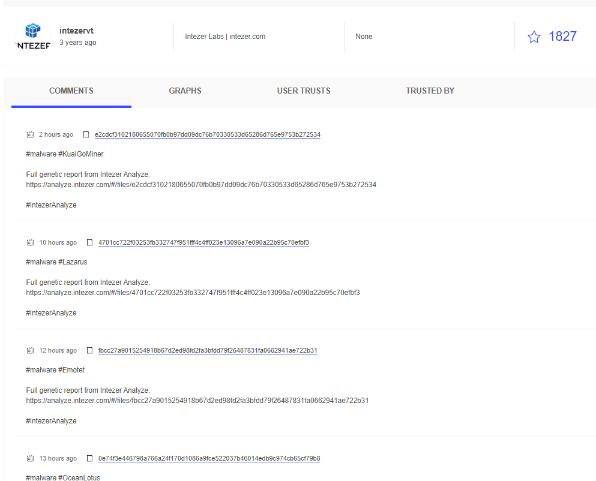
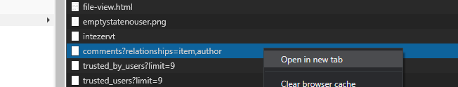
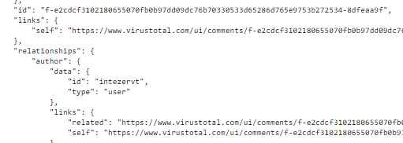
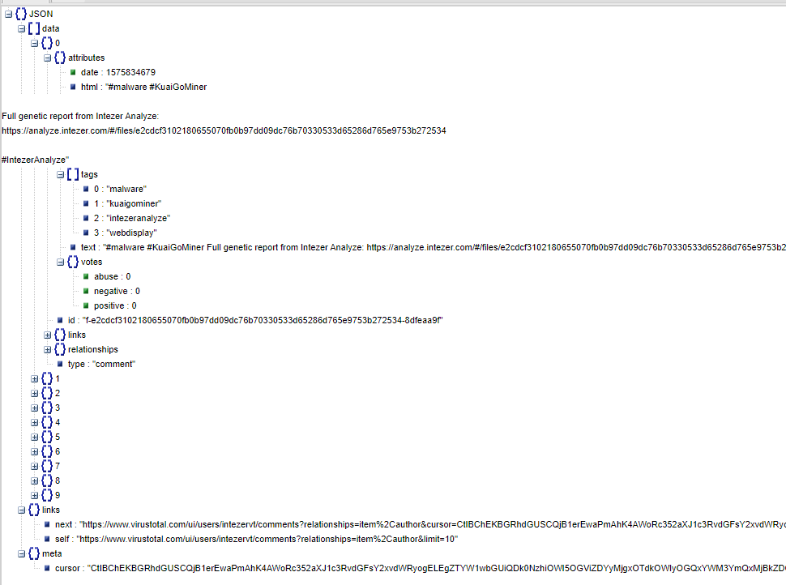

Virustotal ile bilgi toplama
Merhabalar , bu yazımda Virustotal'de private api key olmadan nasıl veri çekebileceğimizi göstereceğim. Amacımız popüler malwerelerin hash listesini çekebilmek. Bunu yapmak için Virustotal'de olan kullanıcı yorumlarını inceleyeceğiz. Aslında kullanıcı desek de bunlar daha çok otomatize sistemler veya malwere analizi yapan büyük şirketler. Örnek vermek gerekirse intezervt kullanıcısı Intezer analayze sitesinin analizlerini paylaşıyor. Hem de sadece paylaşmakla kalmıyor bunları etiketleyip kendi sitesindeki analiz sayfasını da ekliyor.
Normalde public api ile buradaki yorumları çekebilmemiz gerekirdi ancak bu şekilde güncel ve popüler malwerelere herkesin erişimi olur, public apinin kıymeti azalır. Virustotal de bunun düşünmüş olacak ki artık public apinin get comments özelliği kaldırılmış. Ancak biz bu yorumları okuyabiliyorsak erişimimiz de var demektir. Private apimizin olmaması bizi durduramaz. Şimdi sayfanın kaynağını açıp gelen paketleri inceleyelim.
Şöyle bir paket dikkat çekiyor. Yeni sekmede açalım
Evet aradığımız şey tam olarak bu. Yorumlar siteye bir json dosyası ile yükleniyor. Json dosyasını daha okunabilir olması adına bir araçla açıyoruz.
İşte aradığımız tüm bilgiler burada. 10 yorumun etiketleri, yorum dosyasını sha256 değeri, unix timestampi, kullanıcının yorumu ve sonraki 10 commentin json dosyasının linki var. Ayrıca bu kullanıcı her yorumunda kendi incelemesinin linkini paylaşmış. Yorumlardan url çeken basit bir script de ekledikten sonra bunları bir dosyaya veya sql veritabanına yazdırabiliriz. Sonraki 10 commentin linki ile de her seferinde sayfayı yenilememize gerek kalmadan sonraki json dosyasına da erişimimiz var.
Verilen tarihe kadar verilen kullanıcıların yorumlarını kaydeden python scripti:LINK